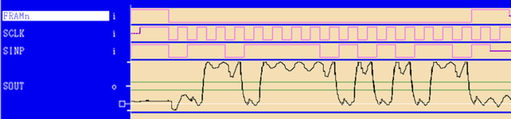
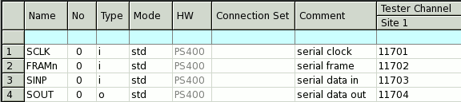
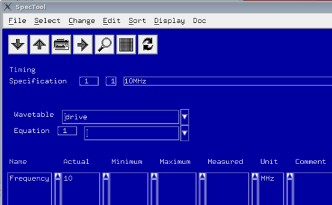
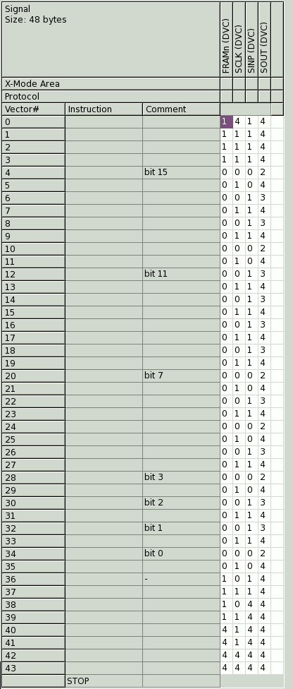

Setting up sequencer control of utility lines
About this task
- V93000 EXA Scale systems running SmarTest 7:
Sequencer‑controlled utility lines are provided by the optional Utility Card and controlled via the serial interface pins FRAMn, SCLK and SINP of the utility pogo blocks.
- V93000 EXA Scale systems running SmarTest 8:
Sequencer‑controlled utility lines are provided by the optional Utility Card and controlled via an internal data path.
- V93000 Pin Scale and Smart Scale systems:Sequencer‑controlled utility lines are provided by the active wiring boards implemented on the following test head / DUT interface combinations:The utility lines are controlled via the serial interface pins FRAMn, SCLK and SINP of the utility pogo blocks.
- Large test head (LTH) with the large DUT interface
- Small test head (STH) with the DUT Scale interface
- Compact test head (CTH) with the DUT Scale interface
- A-class test head (ATH) with the DUT Scale interface or with the small DUT interface
Procedure
Results
-
V93000 EXA Scale systems running SmarTest 7:
You have set up the digital pins for controlling the utility lines of an optional Utility Card via the serial interface of the pogo blocks.
-
V93000 EXA Scale systems running SmarTest 8:
You have set up the utility lines of an optional Utility Card to be controlled synchronous to other instruments via an internal data path.
-
V93000 Pin Scale or Smart Scale systems:
You have set up the digital pins for controlling the serial interface of the wiring board by executing a test method.
The Timing Diagram shows the resulting waveforms. Note that SOUT (D4) merely reads back the pattern that was programmed via SINP (D3). It is offset by the time needed for the controller to shift out the programmed pattern.

Examples
Example 1: Setup for SmarTest 7
The following example sets up three digital pins named D1, D2 and D3 to act as serial inputs to the utility line controller on the active wiring board, refer also to the graphic in Sequencer-controlled utility lines. The controller acts as the DUT in this case.
| Digital pin | Serial pin description | Direction |
|---|---|---|
| SCLK | Serial clock | Input |
| FRAMn | Serial frame enable | Input |
| SINP | Serial data in | Input |
| SOUT | Serial data out | Output |
- Make the following entry in the GLOBAL section of the SmarTest 7
model file:
utility_lines = 128, type = sequencer_controlled, pogo_size = 16
pogo_size specifies the number of utility lines per pogo block and utility_lines specifies the total number of utility lines (pogo_size multiplied by the number of utility blocks). Usual combinations are 64/16, 128/16 and 256/32.
Note If you were to use 4-row utility pogo blocks, the values for utility_lines and pogo_size would need to double. Combinations such as 128/32 or 256/16 are invalid.Note The default for the model file is 128 utility lines and 16 utility lines per pogo block. This applies if you omit the utility_lines entry.Make the following entry in the .technology file:
utility_lines_per_pogo_block: 16
Alternatively you could edit the Utility Block Size entry in the Change Device dialog window, in this case refer to Editing technology data.
Refer also to Configuration of 4-row or 2-row utility pogo blocks.
Note If you were to use 4-row utility pogo blocks, the value for utility_lines_per_pogo_block would need to double. - Set up the pins as shown:

- Use the following code to set up the levels.
EQNSET 1 "drive_receive" SPECS EQUATIONS LEVELSET 1 PINS SCLK FRAMn SINP vil = 0 vih = 1.8 PINS SOUT vol = 0.7 voh = 1.1 - Use the following code to set up the timing.
EQNSET 1 SPECS Frequency [MHz] # max 20 MHz TIMINGSET 1 period = 1000/Frequency PINS SCLK FRAMn SINP d1 = 0 PINS SOUT r1 = 1000/Frequency*0.5+100 - Use the following code to set up the
wavetable
WAVETBL drive DCDT nop PINS SCLK FRAMn SINP 0 "d1:0" 1 "d1:1" 2 "d1:Z" 3 "d1:Z" 4 "d1:Z" PINS SOUT 2 "r1:L" 3 "r1:H" 4 "r1:X" - Assign the clocking frequency for the serial control lines to your equation set
and wavetable.Note The utility line controller on the wiring board is able to handle a maximum frequency of 10 MHz. The clock input to the controller is filtered and higher frequencies are ignored.

- Enter the pattern shown below into the Pattern editor. It shifts 16 bits into
the utility line shift register via SINP. Note that one bit
is represented by two vectors in the pattern. Thus the waveform at
SCLK (D1) requires a 0 and a 1 to generate a single
cycle, see for example vectors 4 and 5.
The whole pattern is surrounded by high-Z vectors. The pattern section required to drive the 16 utility lines present on a single block starts with vector 4 and ends with vector 35. During this period the signal on FRAMn (D2) is driven to 0.
Bit 0 of SINP specifies utility line 1, bit 15 specifies utility line 16. Thus to turn on relays on lines 0, 12 and 14, the pattern on SINP (D3) must drive a 0 on vectors 34 & 35, 10 & 11 and 6 & 7. The rest of the vectors must remain at 1. Each relay coil must be connected between the UP5V line and the corresponding utility line as shown in example Controlling user relay on a DUT board (V93000 systems) of Utility line example circuits. For additional details refer to Utility line interface circuitry.
For the mapping of utility lines on utility blocks refer to the links in step 2 of the procedure above. SOUT (D4) is not used and is therefore set to high-Z for all vectors in the sequence.

Note If you were to use 4-row utility pogo blocks, the pattern would need to be extended to shift 32 bits into the utility line shift register instead of 16.Note Entering a pattern manually can be a tedious and error-prone method, but is the simplest way if controlling just one or two utility blocks. If you need many utility lines you may consider other methods such as d2s or Protocol Aware. - Add the test method code to the test method class as shown
below.
UTILITY_SEQ_MODE utiSeqModeReset; UTILITY_SEQ_MODE utiSeqModeOn; UTILITY_SEQ_MODE utiSeqModeOff; ON_FIRST_INVOCATION_BEGIN(); // // Reset previous settings // utiSeqModeReset.pogoBlock().mode(TM::SEQ_POGO_MODE_OFF); utiSeqModeReset.execute(); // // Enable utility block 1 for serial control // utiSeqModeOn.pogoBlock(1).mode(TM::SEQ_POGO_MODE_RW ); utiSeqModeOn.execute(); // // Perform the functional test // FUNCTIONAL_TEST(); // // Disable the sequencer‑controlled mode of all utility blocks // utiSeqModeOff.pogoBlock().mode(TM::SEQ_POGO_MODE_OFF); utiSeqModeOff.execute(); ON_FIRST_INVOCATION_END();
Example 2: Ganging utility blocks in SmarTest 7
If you were to gang two 2-row utility line blocks together you would need to set up a pattern of twice the length as you would have to shift in 32 bits instead of just 16. Then, to enable for example utility line blocks 1 and 2 for serial control, you would need to implement the following API call into your test methods:
UTILITY_SEQ_MODE utiSeqModeOn;
utiSeqModeOn.pogoBlock(1,2).mode(TM::SEQ_POGO_MODE_RW );
utiSeqModeOn.execute();Functional changes
- Introduced in SmarTest 7.1.0
- SmarTest 7.2.0: 256 sequencer‑controlled utility lines introduced on ATH/CTH/STH DUT Scale and on LTH
- SmarTest 8.3.4: Support of sequencer‑controlled utility lines on V93000 EXA Scale systems.